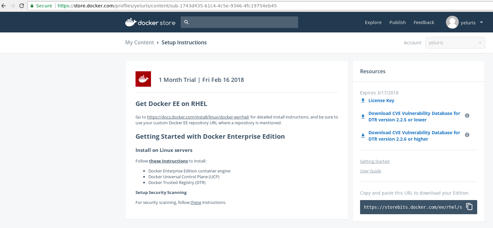

Docker EE on RHEL 7.4

Install Docker CE on Centos7
https://store.docker.com/
dockerCE
yum install -y yum-utils \
device-mapper-persistent-data \
lvm2
yum-config-manager \
--add-repo \
https://download.docker.com/linux/centos/docker-ce.repo
yum install docker-ce
dockerCE
usermod -aG docker <user_id> This is to run docker as non root user
[root@centos7vm ~]# systemctl enable docker
Created symlink from /etc/systemd/system/multi-user.target.wants/docker.service to /usr/lib/systemd/system/docker.service.
[root@centos7vm ~]# chkconfig docker on
Note: Forwarding request to 'systemctl enable docker.service'.
service docker start
docker ps
Nexus
Sonatype Nexus Docker with persisent data
chown -R 200 /home/sriram.yeluri/Data/NEXUS_DATA
docker run -d -p 8081:8081 --name nexus -v /home/sriram.yeluri/Data/NEXUS_DATA:/nexus-data sonatype/nexus3
http://192.168.2.5:8081/
Jenkins : https://store.docker.com/images/jenkins
Jenkins with persisent data
docker run -p 8080:8080 -p 50000:50000 --name jenkins -v /home/sriram.yeluri/Data/JENKINS_HOME:/var/jenkins_home jenkins
docker run -p 8080:8080 -p 50000:50000 --name jenkins -v /home/sriram.yeluri/Data/JENKINS_HOME:/var/jenkins_home jenkins/jenkins:lts
Jenkins Operations Center - JOC
docker run -p 8089:8080 -p 50001:50000 --name cjoc -v /home/sriram.yeluri/Data/JENKINS_OC_HOME:/var/jenkins_home cloudbees/jenkins-operations-center
Initial seret can be found at : /var/jenkins_home/secrets/initialAdminPassword
http://192.168.2.5:8080/
Postgres
docker run --name postgres -e POSTGRES_PASSWORD=secret -d postgres -v /home/sriram.yeluri/Data/PG_DATA:/var/lib/postgresql/data